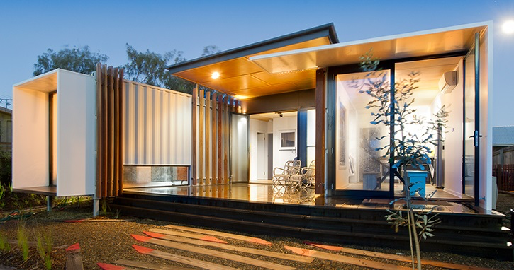
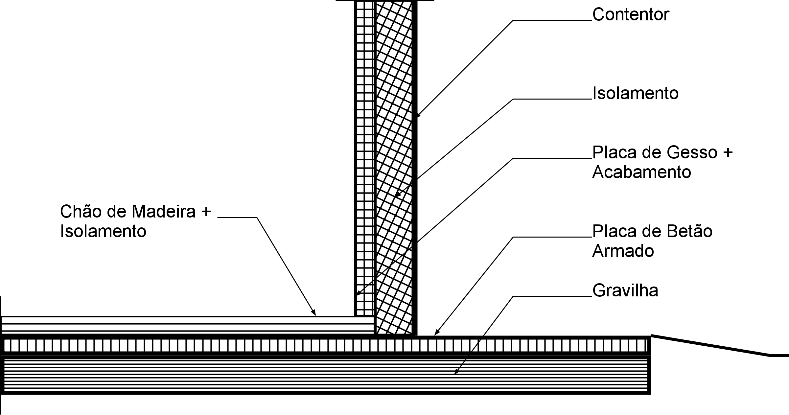
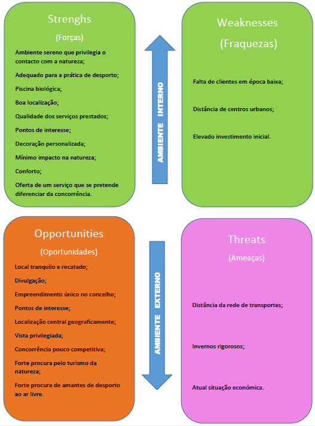
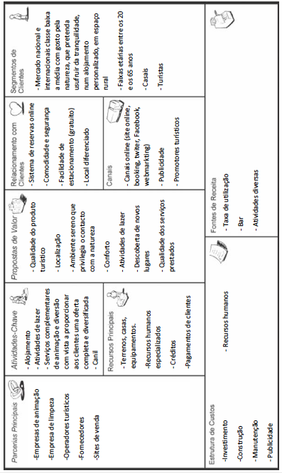
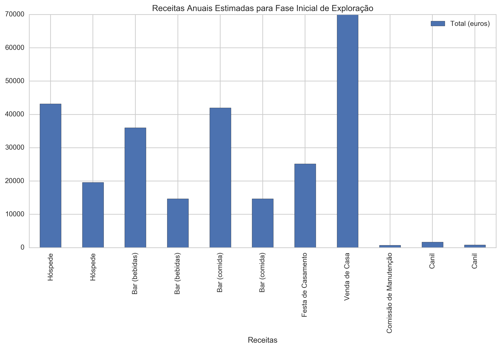
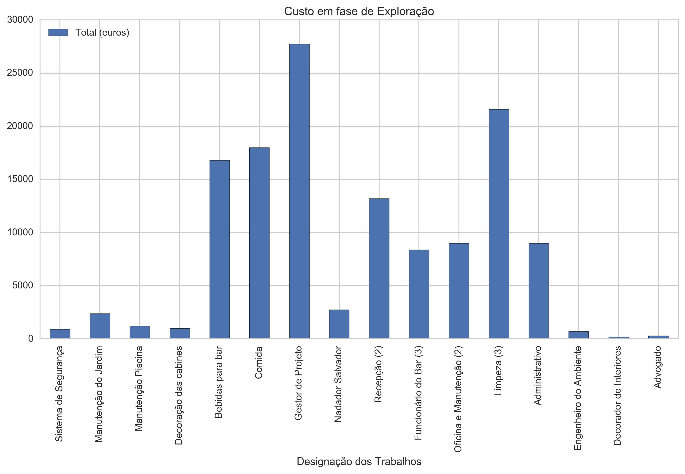

Empreendimento turístico
Aldeia Recanto da Natureza
Table of Contents
- 1. DONE Introdução
- 2. DONE A Ideia e a Equipa
- 3. DONE Definição do Ambito
- 4. IN-PROGRESS Enquadramento Legal
- 5. IN-PROGRESS Quantificação de Custos
- 6. IN-PROGRESS Calendarização
- 7. IN-PROGRESS Estudos de Viabilidade
- 8. IN-PROGRESS Avaliação Financeira
- 9. TODO Organograma de Gestão do Empreendimento
- 10. TODO Conclusão
1 DONE Introdução
Este website foi criado devido à necessidade de existência de um espaço virtual, em que fosse possível a partilha de dados e informação referentes à criação de um Empreendimento. Este trabalho está inserido no curso de licenciatura de Engenharia Civil e consiste na criação, desenvolvimento e controlo das diversas fases de um Empreendimento, na óptica de um engenheiro civil.
Importa desde já referir, que o texto deste website é feito na condição de Promotor, em que são desenvolvidos inicialmente os primeiros passos do Empreendimento, indo depois progredindo, com a análise financeira, qualitativa e temporal.
Será então, e de uma forma sumária, introduzido a visão geral do Empreendimento, os objetivos que se pretende com o mesmo, a perspetiva financeira inicial quanto aos resultados e a conjuntura que leva às escolhas e objetivos pretendidos.
Sendo este website de livre acesso ao público em geral, é importante referir que a informação que aqui consta, é para um projeto fictício, e que portanto não deverá ser usado como fonte de informação ou de apoio a nenhum trabalho, seja ele académico ou não.
Este website encontra-se em atualização.
2 DONE A Ideia e a Equipa
Elaboração provisória dos objetivos do Empreendimento, assim como alguns dos grupos participantes no processo de criação e estudo da viabilidade económica-financeira, ambiental e quais quer outros estudos que se venham a mostrar necessários no desenvolvimento do Empreendimento.
Nesta página ,encontra-se o resumo de todas as fases de um projeto, de acordo com os apontamentos do Professor António Duarte.
2.1 O Empreendimento
O empreendimento consiste na instalação e exploração de uma aldeia hoteleira e turística, no concelho de Porto de Mós, em plena Serra de Aire e Candeeiros, perto do percurso pedestre da Fórnea.
A aldeia será composta por um conjunto independente de casas, que têm como característica comum o fato de serem fabricadas a partir de contentores industriais usados. Uma ideia do tipo de casa pode ser vista na Figura 1 . 1

Figure 1: Exemplo de uma das casas a serem construídas
2.1.1 Georreferenciação do projeto:
A localização georreferenciada do projeto, pode ser vista aqui (abre
uma nova janela).
No topo esquerdo da nova janela, tem um botão
com "show code".
O Pressionar desse betão faz com seja apresentado o
código em python usado na elaboração da Georreferenciação, com os
valores das latitudes e longitudes para o projeto.
A figura 2, é o mapa da localização do projeto, estando este localizado a poucos kms a Sul de Porto de Mós, no Distrito de Leiria.

Figure 2: Mapa regional com a localização do projeto
Este mapa e outros mais, também pode ser visto aqui, caso exista algum problema com a
conversão de python para html no link acima referenciado na
"Note".
2.1.1.1 Limites da Propriedade
Georreferenciação de pontos ao longo do limite da propriedade
| Ponto | Latitude | Longitude |
|---|---|---|
| A | 39.5667 | -8.7973 |
| B | 39.5671 | -8.7962 |
| C | 39.5662 | -8.7942 |
| D | 39.5646 | -8.7929 |
| E | 39.5640 | -8.7944 |
2.1.2 Qualidade:
A imagem será um dos pontos mais importantes do empreendimento, com especial valorização ao modo como o projeto se vai integrar tanto na comunidade local, como no habitat natural da zona. Torna-se assim vital que os níveis de qualidade sejam estabelecidos no Projeto de Investimento, servindo de base à restante documentação:
- Obtenção da certificação LEED . O nível de certificação a atingir no projeto será decido em altura de Pré-Designe, com a colaboração dos restantes membros do Empreendimento.
- Toda a construção deve estar perfeitamente enquadrada com o habitat natural da zona.
- Todo o impacto ao habitat natural, deve ser mantido ao mínimo, tanto durante construção como durante a exploração.
- O projeto terá um total de 10 unidades em uma primeira fase, acrescida de outras 10, em uma segunda fase. No centro das unidades, estará a estação de serviço, que albergará os escritórios, recepção e serviços de manutenção.
- A informação quanto ao desenvolvimento do projecto será centralizada, sendo acessível aos vários membros da equipa. Pretende-se assim implementar o BIM na gestão do projecto. O uso das siglas B.I.M. ao longo deste documento e em futuros, representa um sistema de partilha de informação e não o de uso de algum software em especial.
2.1.3 Tempo:
São diversas as fases do Empreendimento, sendo mais tarde desenvolvido, com a colaboração de toda a equipa, uma análise mais aprofundada. A tabela 1,2 apresenta a duração prevista para as várias fases do projeto. O estudo temporal, assim como o desenvolvimento do gráfico de Gantt, é feito no Capítulo 6,
| Fase | Duração |
|---|---|
| Formação da Equipa | 4 meses |
| Processo de análise e desenvolvimento do projeto | 12 meses |
| Construção | 18 meses |
| Atividades de inicio de exploração | 2 meses |
| Adicionar 10 unidades à aldeia | final de 3 anos |
| Tempo de vida do projeto | 50 anos |
2.1.4 Custo:
Devido ao tipo de características do Empreendimento, o público alvo é bem especifico, sendo de esperar que seja uma clientela jovem, com gosto pela natureza, e por turistas, que quer visitando a Serra de Aire ou Fátima, estando esta última a 30kms de distância, decidam pernoitar na aldeia. É de acordo com o gosto e necessidades destas pessoas que as várias unidades serão decoradas, algo que se espera não tenha um preço muito significativo.
O desenvolvimento da análise financeira é feita ao longo deste trabalho e mais concretamente no capítulo 8 .
| Descrição | Preço (euros) |
|---|---|
| Obtenção e preparação do terreno | 100000 |
| Obtenção de 10 contentores usados | 25000 |
| Preparação das 10 unidades (interior e exterior) | 100000 |
| Pagamento à equipa | 60000 |
| Construção da Estação central | 100000 |
| Licenças, impostos e taxas | 20000 |
| Diversos | 75000 |
| Total | 480000 |
A tabela 2 apresenta os custos esperados até ao inicio das atividades de exploração. A este valor, há que depois acrescentar as despensas de pessoal e manutenção, para manter em funcionamento as operações diárias na aldeia. O valor Total das despesas na fase inicial do Empreendimento, será repartido por aproximadamente dois anos, como estimado na tabela 1.
2.2 Gestor de Projeto
- Sendo este um projeto que pretende alcançar a certificação LEED, um dos requisitos mais desejados no Gestor, será o conhecimento e experiência com projetos sustentáveis. Ele próprio, ser certificado pelo USGBC ou mesmo pelo BREEAM é certamente uma mais valia para o projeto. 3
- A experiência é mais valorizada que o grau académico. O Gestor deve ter pelo menos 10 anos de experiência em equipas de liderança de Empreendimentos na construção civil.
- Capacidade de criação e liderança de uma equipa multidisciplinar. A equipa será formada o mais cedo possível.
- Sentir-se à vontade a lidar com sistemas informáticos de informação centralizados (BIM), de modo que toda a equipa possa facilmente compartilhar, alterar, rever e criar o Projeto em conjunto.
- De modo a que o Gestor se mantivesse à frente do projeto para além da fase de Construção, seria uma mais valia que ele tivesse conhecimentos de hotelaria e de supervisão das operações diárias no âmbito de coordenação das equipas, contato com fornecedores, incluíndo supervisão e controlo dos pagamentos a estes, etc.
- A nível da personalidade, deverá ser uma pessoa dinâmica e carismática, com facilidade de coordenação das equipas, e de resolução de qualquer conflito que possa surgir.
- Para além dos conhecimentos informáticos, de modo a fazer a supervisão da parte digital da integração BIM no projeto, o Gestor de Projetos deve também ter outros conhecimentos informáticos, de modo a poder fazer a supervisão do website do Empreendimento, e para contato social (Facebook, Twitter, Google+, etc) com os clientes.
2.3 Consultores
Os consultores deverão integrar a Equipa de Projeto, desde o início, e manterem-se ao longo das diversas fases. Após o início das operações na Aldeia, uma nova equipa deve ser formada, de acordo com as necessidades das operações.
- Engenheiro do ambiente, de modo a aconselhar na integração do projeto no habitat local. O engenheiro do ambiente deverá coordenar o seu trabalho com o arquiteto, de modo a conseguir um enquadramento do projeto na paisagem local, evitando ao máximo alterar as condições naturais existentes.
- Arquiteto com experiência em construção sustentável em será preferível que tenha tido contato com construções que tenham obtido a certificação LEED.
- Decorador de interior com experiência em construção moderna, que ficará encarregue da decoração dos ambientes interiores das casas e das instalações principais. Deverá coordenar o trabalho interior com o Arquiteto e com o Engenheiro do Ambiente.
- Advogado, com experiência a lidar com projetos de construção.
2.4 Contratação
O modelo de contratação a utilizar no projeto é o método tradicional, em que após a seleção da equipa de consultores com responsabilidades específicas de criação do projeto, é depois selecionado um empreiteiro após um concurso. Os interesses do Promotor, são defendidos durante a duração do projeto, pelo Gestor de Projeto, que se encontra a trabalhar diretamente para o promotor, recebendo um salário mensal pelos seus serviços.
2.5 Funcionários
Grupo de colaboradores, a trabalharem diretamente para a gerência do Empreendimento, recebendo um salário mensal ou de acordo com os serviços prestados.
| Descrição | Quantidade (Verão) | Quantidade (Inverno) |
|---|---|---|
| Funcionário do Bar | 3 | 1 |
| Administrativo | 1 | 1 |
| Recepção | 2 | 2 |
| Nadador Salvador | 1 | 0 |
| Oficina e Manutenção | 2 | 1 |
| Limpeza | 2 | 2 |
3 DONE Definição do Ambito

Figure 3: Exemplo de uma das casas a serem construídas. Imagem obtida do website: http://housely.com/evolution-shipping-container-homes/
Serão agora abordadas as características do Empreendimento, assim como os objetivos pretendidos, inclusivo os métodos de controlo que se pretendem vir a utilizar ao longo da vida do Empreendimento. Ao longo desta secção do documento serão analisados:
- Caraterísticas do empreendimento
- Identificação do enquadramento legal.
- Modelo de funcionamento do empreendimento
- Planeamento temporal (calendarização)
- Métodos de construção, soluções técnicas. Consideração de alternativas.
- Quantificação de custos (estimativa)
- Planeamento financiamento
No entanto, a abordagem de algumas das características acima referidas, não está limitada só a esta secção do documento, pois pela sua própria natureza, como pelo próprio método de desenvolvimento deste documento, requerem que sejam abordadas à luz de diferentes situações e de acordo com a quantidade de informação disponível no momento.
3.1 Caraterísticas e Objetivos
A tendência do sector imobiliário a nível mundial é clara. Existe um forte interesse do público pelo meio ambiente, que certamente deverá aumentar, à medida que os efeitos das alterações climáticas são sentidas e intensificadas. O número de empresas e pessoas dedicadas à construção verde, tem vindo a aumentar mundialmente. E este aumento só existe por causa do atrás referido interesse do público.
Desta tendência mundial para a utilização de produtos verdes, que incluindo na lista estão as próprias edificações, surge a ideia da criação de um complexo de casas verdes, em plena Serra de Aire. O complexo fica localizado em plena zona rural, perto da estrada nacional que vai de Porto-de-Mós para Alvados. O caminho desde a estrada nacional até ao local do complexo, é feito em caminho de terra batida e pedras, que no entanto, e mesmo em época de chuvas, e devido à grande quantidade de pedra de grandes dimensões, não oferece problemas de acesso rodoviário a carros ligeiros.4
No entanto é de prever que algumas reparações tenham que ser feitas anualmente.
3.2 Público Alvo
O público alvo são as pessoas que tentam levar uma vida sustentável e que pela natureza do Empreendimento, e a forma como ele está inserido em uma zona natural, sintam um apelo especial por este tipo de projetos.
No entanto, devido à solitude proporcionado pelo local, e à beleza da paisagem, o Empreendimento também poderá a vir a servir casais à procura de romantismo. Nesse mesmo segmento do público, também é possível proporcionar nos campos do complexo, espaço para casamentos. No entanto, este último será a evitar, por causa do barulho que normalmente é causado por este tipo de festas, que viria a pôr em causa a filosofia do projeto, que pretende acima de tudo ser um espaço de harmonia e respeito para com a natureza e para com a vizinhança.
Pessoas que gostam de fazer caminhadas ou btt na serra, também facilmente encontram no complexo, um espaço que associa-se ao seu estilo de vida, aonde poderão descansar e pernoitar, após um dia de exercício.
Quando se analiza a população alvo pela faixa etária, o grupo de possíveis clientes deverá estar entre os 20 e os 65 anos. Esta afirmação baseia-se nas exigências físicas que normalmente estão associadas à vida campestre e às atividades ao ar livre.
Quanto ao sexo, ambos os sexos devem utilizar de igual modo as nossas instalações, no entanto, o sexo masculino poderá ter uma maior incidência, devido a ser ele o que mais pratica exercício na serra. No entanto, esta diferença vem-se a reduzir, visto existir um número crescente de indivíduos do sexo feminino, a praticarem atividades no exterior.
Em uma análise do poder de compra dos nossos clientes, ela aponta para elementos da classe média baixa e classe média. Embora a classe média alta e rica também possa vir a utilizar os nossos serviços, por uma questão de moda.
3.3 Modelo de Funcionamento
O empreendimento turístico irá laborar 365 dias por ano, havendo necessidade do envolvimento de inúmeros colaboradores para o bom funcionamento dos serviços oferecidos ao cliente, assim as diferentes secções, funcionaram de forma distinta, com horários e recursos humanos conforme as necessidades.
No que diz respeito as instalações da aldeia hoteleira e turística é composta por um conjunto independente de casa pré-fabricadas a partir de contentores.
O complexo encontra-se dividido em 11 lotes, em que um dos lotes, que apresenta uma área ligeiramente superior aos outros, vai ser usado para a construção do edificio central que albergará o escritório, recepção, oficina de manutenção e bar. Também neste lote será criada uma área exterior comum para os residentes e visitantes do complexo, com parque de merendas e piscina biológica. Os restantes lotes serão usados para a construção de casas.
3.3.1 Edificio Central

Figure 4: Imagem do tipo de interior pretendido no Edifício Central. fonte: http://organics.org/
Situado no maior dos 11 lotes, estratégicamente localizada no centro do complexo, o Edificio Central é o núcleo de toda a atividade. Dele fazem parte:
3.3.1.1 Escritório
Centro administrativo do complexo, será usado pelo Gestor de Projeto 5 em fase de Exploração. Em ele serão arquivados os documentos legais e não legais, necessários ao dia-a-dia do complexo. O escritório também servirá de espaço para reuniões administrativas.
3.3.1.2 Recepção
Um balcão, bastantes elementos naturais, como madeira e plantas e a ideia que quem nos visita, acabou de entrar em um sitio especial e diferente. A recepção terá sempre um funcionário de serviço, que durante a noite ou em períodos de menor atividade, apoiará outros serviços (desde que mantenha a sua posição de proximidade ao telefone e ao balcão).
3.3.1.3 Bar
Sala com ambiente de serra, decorado com peças de arte típicas da região, e com um ambiente acolhedor, o bar é um sítio para toda a família poder tomar o pequeno almoço (incluído no preço da estadia), ou almoçar e jantar, uma refeição rápida, em que a especialidade será comida vegetariana.
O horário das refeições não está limitado, sendo possível a qualquer altura, fazer o pedido. Desta maneira, pretende-se servir toda uma gama de clientela, que depois de um dia de atividades desportivas na serra com horário imprevisível, sinta a necessidade de alimento depois do esforço.
O bar fica situado na parte da frente do Edifício Central, com vista para a serra. No exterior, um grupo de mesas de esplanada em madeira, com bancos também em madeira, estão dispostas ao perto da entrada principal do edifício, de modo a receber a quem nos visitar para uma refeição.
Para além das refeições rápidas, o bar também dispõe de um menu de vinhos e cervejas, tanto doméstico como importado.
Uma porta exterior, de acesso só a funcionários, dará acesso da cozinha do bar ao Parque de Merendas e Piscina, de modo a servir os clientes que se encontrem instalados no complexo e estejam a usar aquele espaço.
3.3.1.4 Piscina Biológica

Figure 5: Exemplo de uma piscina biológica, em que o elemento "água", mistura-se com o elemento "terra". fonte de imagem: https://en.wikipedia.org/wiki/Natural_pool
A piscina biológica "é um lago de banho artificial, impermeabilizado com uma tela plástica e composto por uma zona destinada ao banho e outra à depuração de água por processos biológicos e mecânicos. Ou seja, pode servir para natação ou fins ornamentais e de lazer, mantendo sempre um aspecto visual natural – a depuração da água é executada, também, graças às espécies aquáticas nela instaladas." fonte: GreenSavers
A piscina é um local que se pretende de convívio para toda a família, em que no Verão instalaremos um pequeno bar, aonde os nossos hóspedes poderão obter bebidas refrescantes.
"Os custos variam muito, dependente do tamanho da instalação e dos materiais escolhidos. Estruturas em betão são mais caros do que a impermeabilização com uma tela plástica especial – afinal o método mais comum para a construção de piscinas biológicas.
Com a base em cerca de 150 projectos realizados de piscinas biológicas em Portugal pode-se considerar um preço de orientação por metro quadrado construído varia entre 120 e 125 Euro (excluindo apenas o valor da água do primeiro enchimento)."
fonte: Biopiscinas
Durante o Verão, e durante o período das 10 da manhã até às 5 da tarde, a piscina terá um nadador-salvador. Fora desse horário, a piscina continua a ser acessível aos hóspedes. Vários avisos serão espalhados ao redor da piscina, a avisar que fora do horário de vigia do nadador salvador, é da inteira responsabilidade dos utilizadores, zelarem pela própria segurança e dos seus.
Para evitar que aconteçam acidentes com crianças fora das horas de vigia, um fence de aproximadamente 1 metro de altura, será colocado em redor da piscina.
3.3.1.5 Parque de Merendas
Localizado nas traseiras do edifício, perto da Piscina Biológica, o Parque das Merendas é um espaço para os utilizadores do complexo, poderem estar com a familia. No Parque das Merendas serão instaladas várias mesas e bancos de madeira, e para cada uma das mesas, será dedicado um assador, feito em tijoleira, com aproximadamente 1 metro de altura (mantendo assim um nível de segurança em relação às crianças que se encontrem a brincar no Parque.
Para as crianças, no topo de uma árvore, será construído um castelo em madeira, com acesso através de cordas, criando assim em espaço para as crianças criarem as suas próprias histórias.
No Parque, não haverá serviço de bar a não ser em ocasiões especiais e que tenham sido previamente marcadas. No entanto, é possível comprar lenha e carvão no bar (que será guardado perto da Oficina).
3.3.1.6 Oficina
Pequeno espaço localizado no Edifício Central, de acesso por uma zona discreta de modo a não atrapalhar a estadia dos nossos clientes, a Oficina é o lugar aonde se guarda as ferramentas e equipamento necessário para as pequenas reparações e manutenção do complexo.
Entre as ferramentas e equipamento, podemos encontrar uma moto serra, máquina de cortar a relva, jato de água à pressão, máquina de soldar, etc.
Este equipamento estará ao serviço de uma pessoa encarregue por zelar pelos imóveis do complexo assim como pelos seus jardins. Reparações de grande porte, serão contratadas a empresas especializadas.
3.3.1.7 Canil
É esperado que muito dos nossos clientes sejam donos de animais de estimação. Para que eles possam disfrutar de uma estadia descansada e sem preocupações, taremos ao dispor dos nossos clientes um canil, que pelo qual, será cobrado uma taxa extra de 5 euros ao dia. Este valor incluí o fornecimento de ração sólida aos animais. Não é permitido qualquer outro tipo de ração dentro do canil, de modo a assegurar as condições de higiene e saúde dos animais. Na altura em que o animal de estimação é deixado ao nosso cuidado, o dono deverá assinar um documento preparado pelo nosso advogado, em que nos libera de todas as responsabilidades caso o animal venha a contrair alguma doença por estar em contato com outros animais no canil.
3.3.2 Casas
As casas, em um total de 10 na primeira fase, serão distribuídas por 10 lotes ao longo de um caminho em terra batida, que percorre o complexo no seu comprimento, dividindo a área do complexo em duas.

Figure 6: Exemplo de uma das casas a serem construídas. Imagem obtida do website: http://www.niftyhomestead.com/
A análise quanto ao método construtivos das casas, é feita no Secção 3.4.1.2 deste trabalho.
Algumas das vantagens de uma construção a partir de contentores usados:
- Preço, pois é possível adquerir um contentor usado por 2,500 euros ou menos. Isso significa uma poupança em relação à uma estrutura de uma construção tradicional. Embora exista várias modificações a serem feitas aos contentores, como aberturas para portas e janelas e reforço estrutural caso necessário, a diferença monetária ainda se mostra bastante significativa.
- Qualidade e Segurança, e por qualidade, perceba-se os níveis e objetivos que são pretendidos para o complexo. As casas ao terem a sua origem em contentores, criam uma imagem de marca para o Empreendimento, que pode ser explorada em programas de marketing. Em referência à segurança, o fato de ser uma estrutura independente, sólida, e estruturalmente segura em que o corpo da estrutura age como um todo em não como membros independentes, faz com seja um excelente método de construção para zonas sísmicas como é o caso do nosso país.
- Tempo de construção é muito inferior ao de uma construção tradicional visto a estrutura já se encontrar feita.
3.3.3 Área comum e Acessos
A área comum, é de livre acesso ao publico, e incluí o caminho de acesso ao bar localizado no Edifício Principal. O estacionamento é limitado, no entanto, fora do complexo, existem vários lugares que podem ser utilizados para estacionamento, sendo atualmente já utilizados por visitantes da Serra de Aire.
O caminho dentro do complexo, será em terra batida, com as mesmas características dos acessos existentes. Como referido anteriormente, o maior problema com esta escolha deve-se a dificuldades nas entregas de mercadorias em altura de chuva se for utilizado um camião, havendo mesmo a possibilidade dele ficar preso na lama. No entanto, não deverá nenhum problema se for utilizado uma carrinha.
3.4 Método de Construção
3.4.1 Soluções Técnicas
3.4.1.1 Painéis Solares Fotovoltaicos
O terreno do complexo fica situado em zona rural, a aproximadamente 200 metros da habitação mais próxima. No local não existe nem sistema de esgotos, água ou electricidade, e que portanto, terá que ser trazida para o local de construção.
No entanto, através da instalação e uso de Painéis solares fotovoltaicos distribuídos por todas as casas e por o complexo, será possível satisfazer as necessidades mínimas de energia dos nossos clientes e das operações diárias, como atividades do escritório e receção. No entanto, é de supor que a necessidade de energia para a manutenção do bar, seja superior ao máximo de energia possível de extrair dos painéis.
3.4.1.2 Casa

Figure 7: Corte tipíco de uma parede e chão das Casas
Como já referido, as casas serão fabricadas a partir de contentores usados. As vantagens de usar uma estrutura metálica já existente são numerosas, e encontram-se referidas na secção 3.3.2 deste trabalho
Como base de suporte para (fundações_) a casa, será construída uma plataforma em betão armado, com aproximadamente 20 cms de altura a partir do terreno e na parte da frente da casa, criando assim um degrau em betão armado, que depois pode ser revestido com madeira, caso seja decidido usar a plataforma para esplanada privada da casa. Nas zonas laterais, a fundação ficará ligeiramente mais alta que o terreno (o suficiente para que a água da chuva escorra naturalmente por gravidade), tal como na figura 7.
Tratando-se de uma zona calcária com bastante fissuração nas rochas existentes no terreno, e sendo esta uma zona de bastante formações geológicas como algares e grutas, e estando as casas situadas em terreno de maior elevação quando comparado com a vizinha imediata, não se prevê que exista problemas com o nível freático, no entanto, a plataforma de betão deverá ser assente no topo de um manto de pelos menos 15 cms de inertes, que poderão ser extraídos da zona do complexo.
As paredes, exteriores, devem ser lixadas, removendo completamente a pintura existente nos contentores, para depois ser aplicado uma mão de primário, e posteriormente duas mãos de tinta de cor a ser decidida pelo arquiteto e decorador. No parte interior da parede exterior, serão aplicados placas de isolamento, de espessura a ser determinada após análise tecnica quanto à exposição solar, exposição aos ventos e outras características que possam afetar o isolamento térmico da casa. No interior, as paredes serão revestidas por placas de gesso, sendo estas resistentes à humidade, em locais como a casa de banho e cozinha. Nas zonas do chuveiro, o revestimento da parede, chão e teto, será feito,com placas de cimento, aparafusadas a barras de metal, sendo posteriormente nivelada a superfície, de modo a receber o azulejo.
O chão da(s) casa(s) será em piso flutuante, com o tipo de madeira e cor a ser decidido pelo arquiteto e o decorador de interiores.. O piso será assente no topo de uma camada rígida de isolamento e de uma película de polyurethane de 6mm.
O telhado da casa deverá ser revestido com EPDM, de forma a poder suportar o painel solar e a movimentação de trabalhadores. Como opção, e em certas condições, pode-se usar uma camada de 5 cm de gravilha do rio, de forma a proteger a película de EPDM da exposição solar.
Janelas em aluminio, com vidro duplo enchido com argon. Portas exteriores em carvalho e planas. Portas interiores em MDF, preparadas para receber pintura de acordo com o arquiteto e decorador de interiores.
3.5 Análise SWOT
A Análise SWOT é uma ferramenta de gestão muito utilizada pelas empresas para o diagnóstico estratégico, facilita a identificação dos pontos fortes e os pontos fracos da empresa, relacionando-os que com a legislação aplicável em vigor, a conjuntura económica e do mercado em que opera.
Este tipo de análise é efetuado a 2 níveis, a nível interno e a nível externo. Ao nível interno são avaliados os pontos forte e fracos, enquanto que, ao nível externo são diagnosticadas as oportunidades e ameaças resultantes de uma análise da envolvente do empreendimento. Os dados que se obtém com a realização de uma análise SWOT permitem definir os objetivos futuros do empreendimento/empresa.
Aplicando esta ferramenta ao nosso empreendimento, efetuou-se uma análise, sendo os resultados da mesma apresentados na figura 8

Figure 8: Análise SWOT
Neste sentido, pode dizer-se que esta empresa tem pontos fortes bastante claros e definidos que a diferenciam de possíveis concorrentes, o facto de se inserir num ambiente de natureza com uma beleza extrema e a possibilidade de cada cliente ter um espaço independente de forma a preservar a sua privacidade, são aspetos únicos que tornam este empreendimento tão singular. Por outro lado, as apostas que faz ao nível da qualidade dos serviços oferecidos e o facto de ter diversos serviços à disposição dos clientes também traz prestígio à empresa.
Os pontos fracos dizem respeito ao facto de ser um investimento elevado e a possibilidade de haver falta de clientes em época baixa.
Em relação às ameaças é algo que não é da responsabilidade do promotor, uma vez que a situação climática do País e as dificuldades que o País atravessa são factos que o transcendem.
3.6 Canvas
O canvas para o trabalho é apresentado na Figura 9.

Figure 9: Canvas
4 IN-PROGRESS Enquadramento Legal
4.1 Conformidade com a Legislação em vigor
4.2 Entidades Licenciadoras
- Câmara Municipal de Porto de Mós, responsável pela aprovação e licensiamento dos projetos de movimentação de terras, estabilidade e segurança contra incêndios.
- Turismo Centro Portugal, licenciamento do projeto.
- Associação Humanitária dos Bombeiros Voluntários de Porto de Mós, que embora não sejam a entidade licenciadora, é com a colaboração destes que o plano de segurança contra incêndios é desenvolvido.
- Energias de Portugal, para o licenciamento da rede eléctrica.
5 IN-PROGRESS Quantificação de Custos
A quantificação dos custos para o Empreendimento é feita usando duas linguagens de computação. De forma a apresentar a análise de custos em html , sendo portanto mais fácil a sua visualização na internet, foi usado Python . Para a criação de documento em formato pdf, sendo o mesmo apresentado em anexo a este trabalho, foi usado R.
5.1 Custo Total
O custo Total até ao final do primeiro ano de exploração do empreendimento é apresentado de seguida, sendo o seu cálculo feito de forma automática, extraindo os dados das tabelas de cálculo usadas. Este será o custo para todas as despesas esperadas até ao final do primeiro ano de exploração, e que portanto incluí as despesas de todas as fases antecedentes (exemplo: compra de terreno, preparação de peças desenhadas e escritas, etc).
O custo total para as despesas do Empreendimento: 582250.0 euros.
5.1.1 Divisão Por fases
O custo Total encontra-se dividido em três fases: Designe, Construção e Exploração 6 , tornando-se assim mais fácil a análise comparativa das diferentes etapas do Projeto.
6 IN-PROGRESS Calendarização
A calendarização do Empreendimento é feita em Microsoft Project, utilizando Diagramas de Gantt, sendo apresentado como anexo a este documento.
| Milestone | Data |
|---|---|
| Início da Construção | |
| Início da Exploração | |
| Obtenção da Certificação LEED | |
| Início da Construção de 10 novas casas | |
| Finalizar da Construção de 10 novas casas |
7 IN-PROGRESS Estudos de Viabilidade
7.1 Viabilidade Técnica
Estudo geral sobre Empreendimento, em que se procura responder aos níveis de qualidade (generalizado) pretendidos pelo Promotor:
- Tempo
- Custo
- Qualidade
Com vista à qualidade no Tempo, e sabendo que é do interesse para o sucesso do Projeto que este entre em fase de Exploração o mais rapidamente possível de modo a conseguir a captação de capital através da prestação de serviços, foi criado a Calendarização em formato de gráfico de Gantt (ver Secção 6 ). O tempo considerado para as diversas atividades, foi propositadamente ligeiramente inflacionado, de modo a que a base de estudo seja para uma situação mais adversa do que a que se espera na realidade. Mesmo em uma perspectiva temporal extendida, o projeto apresenta condições para entrar em fase de Exploração um ano após o inicio do Designe.
A análise do Custo, desenvolvido na Secção 5, e posteriormente analisado na Secção 8, servirá de base para as decisões económica/financeiras a serem tomadas. Com base nos dados obtidos, serão tomadas decisões referentes ao tipo de financiamento a ser contraído. No entanto, de modo a gerir o risco associado com um projeto desta natureza, a construção do Empreendimento foi faseada em duas partes. Em uma primeira fase serão construídas 10 casas e 5 anos depois, mais 10 casas serão adicionadas ao complexo. Ao repartir o custo do Empreendimento no tempo, pretende-se gerir o risco e ter um maior controle sobre o capital. Consegue-se assim que as necessidade de capital inicial do Projeto sejam inferiores, não se prevendo que exista necessidade de financiamento na banca. Devido ao tipo de construção adotada, com a reutilização de contentores, também se consegue níveis superiores a um menor custo.
Fatores de qualidade são bastante importantes para o Empreendimento, pois será vendida acima de tudo a imagem. De forma a conseguir a comercialização da imagem projeto, será obtida a certificação LEED (ver Secção 2.1 ). Esta certificação é atribuída de acordo com os níveis de qualidade ambiental do Projeto, em que são analisados fatores com o impacto ambiental, tipo de materiais usados, qualidade do ar, etc. O tipo e método de construção, localização, modelo de funcionamento e exploração do Empreendimento, foi concebido desde a sua fase inicial, dentro dos parâmetros da Certificação LEED.
7.2 Viabilidade Ambiental
Um dos aspetos mais importantes do projeto, a Viabilidade Ambiental é para além de um requisito da legislação portuguesa, um dos pontos fortes do Empreendimento, pelo qual será depois desenvolvido campanhas de marketing.
Os requisitos ambientais impostos pela certificação LEED, são superiores às normas e regulamentos ambientais atualmente em vigor em Portugal, no entanto, devido à grande proximidade com uma área protegida, certas questões podem ser levantadas por parte das entidades oficiais, mas que no entanto, deverão ser facilmente rebatidas através de uma eficaz explicação dos objetivos do Empreendimento e a forma de como ele vai ser construído e gerido.
Questões de impacto ambiental como a poluição, transtorno do habitat natural, o não enquadramento da arquitectura no meio ambiente, poluição das linhas de água, etc, não são problema quando analisados à vista dos objetivos do Empreendimento.
No entanto, existe um fator que está além do nosso controlo, que é a forma de comportamento das pessoas que nos visita. Mas como referido anteriormente (Secção 3.2 ), é esperado que a nossa clientela seja maioritariamente constituída por pessoas amantes da Natureza, pelo que para já, a hipótese de impacto ambiental negativo por parte destes, seja muito reduzida.
7.3 Viabilidade Politíca-Social
7.4 Viabilidade Económica e Financeira
8 IN-PROGRESS Avaliação Financeira
8.1 Determinação da Taxa Atualizada, \(i\)
A taxa de juro atualizada é calculada pela seguinte fórmula:
\begin{equation} i=(1+T_{1}) \times (1+T_{2}) \times (1+T_{3})-1 \end{equation}| Taxa | Percentagem |
|---|---|
| Taxa de Juro Investimento de baixo risco, \(T_{1}\) | 0.01 |
| Taxa de Inflação, \(T_{2}\) | 0.02 |
| Taxa de Risco do investimento, \(T_{3}\) | 0.2 |
A Taxa de Juro Atualizada, com uma Taxa de Juro de Investimento de baixo risco a 0.01 , com a taxa de inflacao de 0.02 , e uma taxa de risco de investimento de 0.2 . Taxa Atualizada = 0.23624 .
8.2 Análise Financeira
O avaliação financeira é feita para o período de vida do Empreendimento, sendo este de 50 anos.
Valor Acrescentado Liquido - VAL
\begin{equation} VAL=f_{0}+ \frac{f_{1}}{(1+i)}+ \frac{f_{2}}{(1+i)^{2}}+ \frac{f_{j}}{(1+i)^{j}}..+ \frac{f_{n}}{(1+n)^{n}}= \sum _{ j=0 }^{ n }{ \frac { { f }_{ j } }{ { (1+i) }^{ j } } } \end{equation} \begin{equation} VAL=\sum _{ j=0 }^{ n }{ \frac { { b }_{ j } }{ { (1+i) }^{ j } } } - \sum _{ j=0 }^{ n }{ \frac { \left| { c }_{ j } \right| }{ { (1+i) }^{ j } } } = \sum _{ j=0 }^{ n }{ \frac { { b }_{ j }-\left| { c }_{ j } \right| }{ { (1+i) }^{ j } } } \end{equation}8.3 Receitas/Lucro
As receitas do Empreendimento, são obtidas maioritariamente através do aluguer de casas. No entanto, existem outras formas de receitas:
- Venda de Casas
- Bar/Restaurante
- Organização de festas
- Comissões
- Aluguer de casas
- Canil
A venda de casas, representa uma quantia significativa do lucro, para os primeiros 10 anos do projeto. Inicialmente, serão construídas 10 casas, das quais, cinco serão vendidas. As restantes serão mantidas para aluguer. O objectivo é que seja vendida uma casa por ano, nos primeiros cinco anos de Exploração. No finalizar dos 5 anos, o complexo será expandido, com a adição de novos terrenos e 10 novas casas.
Durante o quinto e décimo ano de Exploração, é parte dos objectivos, a continuação da venda de uma casa por ano, o que significa, que no ano décimo de Exploração, um total de 10 casas estarão na mão de terceiros, e 10 casas continuarão a fazer parte do Empreendimento, sendo alugadas a visitantes.

Figure 10: Receitas
Para as casas vendidas, existirá uma comissão mensal a ser paga pelos donos, de forma a cobrir despesas de manutenção no complexo, incluíndo a piscina, à qual, os donos e hóspedes destes, terão acesso.
O preço da estadia nas casas, varia de acordo com a época do ano. É considerado Época Alta, os seguintes épocas:
- De 15 de Junho a 15 de Setembro
- De 20 de Dezembro a 5 de Janeiro
- Semana da Páscoa
- Semana do Carnaval
A análise de receitas foi feita tendo em conta estas flutuações ao longo do ano, em que se espera poder cobrar um maior preço e a um maior número de pessoas, durante a Época Alta.
O canil também é considerado uma fonte de rendimento, embora que baixa, mas que tem como principal objectivo o de atrair hóspedes que sejam donos de animais de estimação e que não encontrem na zona de Porto de Mós-Fátima-Leiria,hóteis e/ou pousadas, que autorizem a estadia de animais.
A realização de festas de casamento e/ou de eventos semelhantes, é considerado uma fonte importante de benefícios para o favorável desenvolvimento financeiro do Empreendimento. Ao serem realizados festas, um grande número de pessoas que poderia nunca ter ouvido falar do Projecto, é agora convidada a entrar e a usar os espaços da Aldeia. É importante usar estas festas como forma de dar a conhecer o Projecto e de atrair novos clientes para as casas de aluguer, ou mesmo para a compra destas. As festas também representam uma fonte importante de lucro durante a época alta, considerando-se nesta análise, que o seu é insignificativo na época baixa.
8.4 Despesas
As despesas do Empreendimento são analisadas na Secção 5 deste trabalho.

Figure 11: Despesas em Fase de Exploração
A estimativa das despesas foi elaborada para o primeiro ano de exploração. No entanto, é de supor que as despesas não variem muito para os restantes anos, tendo sido por isso usado o Ano Zero da Exploração do Empreendimento, como base de análise para os restantes anos de vida do projeto.
No quinto ano da Exploração, será adicionado uma nova secção ao complexo, através da compra de terreno para a construção de 10 casas adicionais. Para este investimento, é usado os dados obtidos na fase de Construção e Designe, visto o novo investimento apresentar características bastantes semelhantes, em que a grande variação se encontra no Edifício Principal e as áreas que o circundam, como a Piscina Biológica e Parque das Merendas. A expansão do complexo prevê apenas a construção das casas e seus acessos.
Com base nos dados obtidos para a construção da Aldeia, estima-se que o preço para a compra de tereno e construção de 10 novas casas seja de acordo com os dados apresentados na tabela 5.
| Descrição | Quantia (euros) |
|---|---|
| Compra de terreno | 100000 |
| Preparação do terreno | 20000 |
| Água, luz, esgotos | 15000 |
| Construção de 10 casas a partir de contentores | 100000 |
| Decoração, acabamentos, mobiliário, etc. | 50000 |
| TOTAL | 285000 |